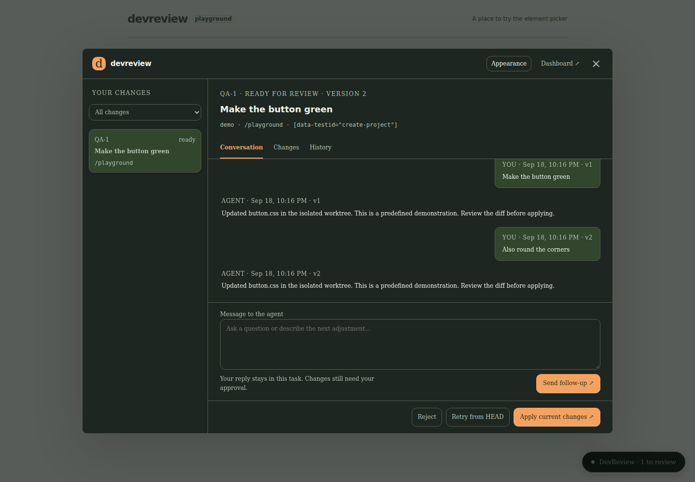

For people who build with AI
Point it out.
Talk it through.
Tell your coding agent what to change, right where you see it. No component names required.

You know what feels off.
Start there.
From “this button” to a change you can review, with the context already attached.
- Point.
Choose the thing.
Select an element in your local app. NudgeThis captures its context so your agent knows where to look.
- Tell.
Use your own words.
“Give this more space.” Ask for a change and keep the conversation attached to that request.
- Review.
Make the final call.
See the proposed code changes and validation results. Ask for another pass or apply when you're ready.
Keep the whole
conversation.
Feedback, replies, and previous versions stay together. Come back to a change without starting the explanation over.
- Your agent
- Connect Codex CLI or a compatible adapter. Copy context to any agent that accepts text.
- Your workspace
- Review changes locally. You decide what gets applied to your project.
- Your style
- Choose your colors and fonts. Make the review interface feel like yours.

A few things to know.
Do I need to know what UI elements are called?
No. Select the element and describe what you'd like to change. You can say “this box” or “that button” instead of looking up a component name.
Does it run on my computer?
Yes. NudgeThis is a local development tool. This website introduces the project; the application and your chosen agent run on your machine. Your agent's own network and data policies still apply.
Can I use my own coding agent?
Codex CLI has a dedicated integration. Other agents need a compatible ACP or custom adapter. You can also copy a request's context into any text-based agent. Connecting an agent creates a new conversation.
Is it free?
The project is open source under the MIT license. Any subscription or API usage required by your chosen agent is separate.
Can I try it yet?
It's an early alpha you can build from source. The repository includes setup instructions and a local demo with a predefined agent, so you can explore the flow without model calls. Packaged downloads are not published yet.
Read the setup guideYou don't need to know what it's called.